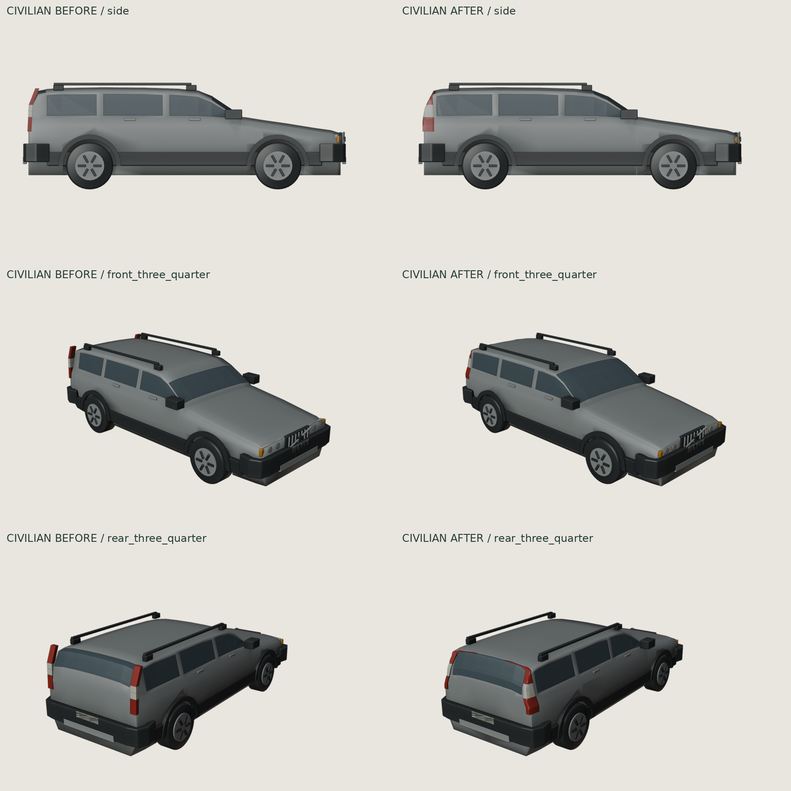
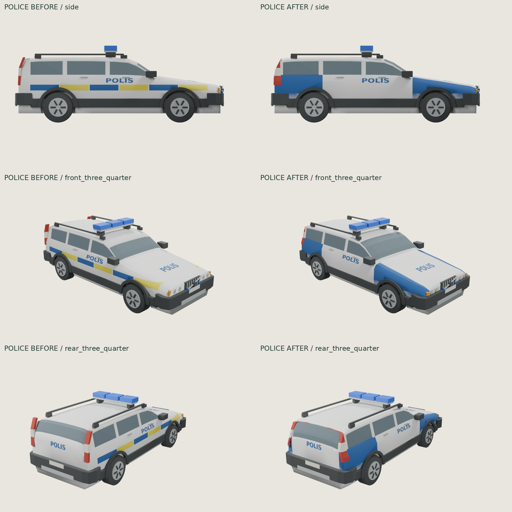

XC70 P2 · glass, lamps and blue/white police paint
Targeted correction of the existing shared-body master. Roof, wheelbase, ride height, wheels, bumpers, rails and lightbar retained. The JSON audit verifies unchanged bounds, central roof vertices and all preserved components.
Changes: seated full windshield; taller rear glass with thin upper/lower reveals; rear side glass extended 80 mm; shallow corner-conforming tail lenses; rectangular recessed headlamps; blue/white police paint only with full blue fender/quarter panels. POLIS lettering retained. Remaining: stylized opaque faceted glazing and simplified lamps. This is not a hollow manufactured tailgate; the closed body backing remains.
Civilian · before / after

Police · before / after
